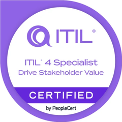

ITSM folyamattanácsadó · ITIL 4 Strategic Leader
Service management, amit az emberek tényleg használnak.
IT service management folyamatokat építek fel és alakítok át, és vezetem azt a szervezeti változást, amitől tartósak maradnak. Több mint 9 év tapasztalat banki szolgáltatások, autóipar és gyártás területén.
Ismerős helyzet?
Ritkán az eszköz a valódi probléma. Sokkal inkább az összhang hiánya.
Papíron létezik a folyamat, de a csapatok megkerülik.
A munkafolyamatokat megtervezték, a napi munka mégis e-maileken, chateken és személyes szívességeken múlik.
A change-jóváhagyás lassítja a deliveryt, ahelyett hogy védené.
A CAB inkább letudandó checkpoint, mint a kockázatkezelés valódi fóruma.
Minden régió és csapat a maga módján csinálja.
Eltérő szabályok, eltérő eszközök, eltérő „kész” fogalom – és nincs közös kép a szolgáltatásról.
Szolgáltatások
Miben segíthetek?
Szervezeti változás és ITSM-átalakítás
Operating model, RACI és munkamódszerek, amelyekben a régiók vezetői meg tudnak egyezni. Az ellenállással dolgozom, nem megkerülöm.
Oktatás és workshopok
ITIL-oktatás, process onboarding és vezetői workshopok, amelyek után az új munkamód napi rutinná válik.
ITSM felépítése a nulláról
Incident, Problem, Change, Request és Knowledge Management, úgy tervezve, hogy az eszközben is működjön: Jira Service Management, ServiceNow és Azure DevOps.
Válogatott eredmények
Ami eddig működött
Incident, Major Incident, Problem, Change és Request Management felépítése a nulláról
Az ISO/IEC 27001, 27017 és 27018 szabványokkal összhangban. A rendszer az első fél évben mintegy 1000 jegyet kezelt.
Quality Gate az Azure DevOps és a Jira Service Management között
Kód csak jóváhagyott change után kerülhet be, így a kódtól a CAB-jóváhagyásig nyomon követhető a lánc.
Tanácsadás egy új CIO-nak négy regionális IT-szervezet egységesítéséhez
Change Enablement felépítése kontrollálatlan állapotból: maturity assessment, improvement roadmap és globális oktatás.
Multiregionális CAB vezetése Amerikában, Kínában és Európában
Később érett Knowledge Management practice-t működtettem article ownerekkel, éves review-kkal és minőségméréssel.
Módszer
Az első beszélgetéstől a tartósan működő practice-ig
-
1
Megértés
Maturity snapshot, stakeholder map és a customer journey úgy, ahogy ma valóban működik.
-
2
Tervezés
Folyamatok, szerepkörök és operating model, egyeztetve azokkal, akik működtetni fogják.
-
3
Bevezetés
A folyamat beállítása az eszközben, és a csapatok felkészítése az új munkamódra.
-
4
Beágyazás
KPI-ok, service review-k és continual improvement, hogy a változás a távozásom után is megmaradjon.

Nem tudja, hol kezdje?
Ötnapos ITSM health check: interjúk a kulcsszereplőkkel, maturity snapshot és három prioritás, amellyel azonnal elindulhat.

Rólam
Folyamatszakértő, change enabler, tréner
Több mint kilenc évet töltöttem globális, mátrixszervezetekben, a service desktől a globális Change Enablement vezetéséig. Leginkább a service management emberi oldala foglalkoztat: hogy a régiók vezetői és csapatai közös munkamódban állapodjanak meg, és hogy ezt az eszköz is támogassa.
Tapasztalat: SMP Solutions, KOSTAL Group, Celanese és Computacenter. BSc menedzsment szakon, szakdolgozatom a stratégiai workshopokról és a kreatív vezetésről szólt. Budapesten élek.
Tanúsítványok
 ITIL 4 Strategic LeaderPeopleCert
ITIL 4 Strategic LeaderPeopleCert
ITIL 4 Specialist: Drive Stakeholder ValuePeopleCert ITIL 4 FoundationPeopleCert
ITIL 4 FoundationPeopleCert Microsoft Certified: Azure FundamentalsMicrosoft · AZ-900Ellenőrzés ↗
Microsoft Certified: Azure FundamentalsMicrosoft · AZ-900Ellenőrzés ↗
Eszközök
Jira Service Management · Jira Assets · Confluence · Azure DevOps · ServiceNow · Microsoft 365 és Copilot
Beszéljük meg, milyen service management kihívással néz szembe.
Egy rövid, kötelezettség nélküli beszélgetés általában a legjobb első lépés.